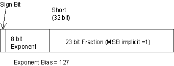
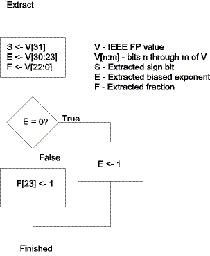
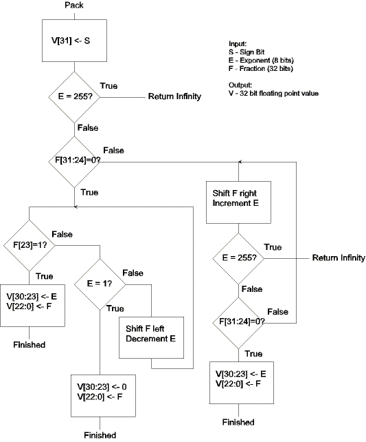

| Previous Section | Next Section | Index | Questions | Search the Text |
In the 1970's every processor manufacturer had their own floating point format. In order to have a consistent format for embedded applications, the IEEE developed a floating point format using sound mathematical principles. The result is that calculations can be made on almost any processor and identical results will be obtained. And the results will be carried out to the maximum accuracy possible. The standard specifies three different formats, of various lengths. The one we will be concerned with is the Short format, which is 32 bits in length:

This format has the following characteristics:
In our implementation, we will not be implementing the full standard, mainly to keep the examples as simple as possible. In particular, the following shortcomings exist:
My son, when he was a Computer Science undergraduate at another college, took a course much like this one (but using the Intel 8051 microcontroller). He had said that they had to write a floating point addition algorithm in assembly language. I was impressed. However while writing this chapter I asked him about it. The paraphrased discussion follows:
Son: You are only going to have your students use a floating point package in the lab? WE wrote an IEEE Floating point addition routine.
I: That's quite a task, considering it involves subtraction when the signs are different.
Son: Well, we only considered positive numbers.
I: OK, but it's still difficult because you have to handle the gradual underflow.
Son: He [the instructor] didn't talk about that.
I: Did you at least handle overflow?
Son: No.
That is why we will look at the basic algorithms and the code but not write the code! We will see that writing the addition function takes about 200 lines (machine instructions) of code, most of which is in subroutines that get called from at least two places. The complete package is about 700 lines of code and took me, with 30 years experience, a week of evenings to write and test. I'm sure there are still errors. The source code is here.
All of the floating point calculation algorithms require manipulation of the sign, exponent, and fraction fields separately. To aid in their implementation, we will use utility routines to unpack a floating point number into separate fields, and another routine to pack the fields back up. When unpacked, the value will occupy six bytes, one byte for the sign (only the most significant bit is used), one byte for the exponent, and four bytes for the fraction, with the binary point between bits 22 and 23. The most significant one bit is explicit, not implied.
FSIGN: equ 0 ; Offset to byte with sign bit FEXPO: equ 1 ; Offset to byte with exponent FHIGH: equ 2 ; offset to high word of fraction FLOW: equ 4 ; offset to low word of fraction FPSIZE: equ 6 ; Size of an unpacked floating point value
When we do the extraction, we will need to handle the case of zero exponents. The algorithm is:

This becomes the following routine:
fpExtract: ; Extract IEEEFP fields.
; X - address of IEEE FP value
; Y - address of Unpacked value
ldd 0,X ; MSW of IEEE value
asld ; Shift to left, A has exponent
ldab #0
rorb ; Shift sign bit into b
stab FSIGN,Y ; Save sign and exponent
staa FEXPO,Y
beq fpExZer ; Exponent is zero -- branch
ldd 0,X ; Get MSW again
clra
orab #$80 ; Set hidden msb of fraction
bra fpExZerJoin
fpExZer:
inc FEXPO,Y ; Exponent=1
ldd 0,X ; Get MSW again
clra ; clear exponent and sign bits
andb #~$80
fpExZerJoin:
std FHIGH,Y ; Store high order fraction
movw 2,X FLOW,Y ; Move low order
rts
The routine is passed the address of the IEEE FP value as well as the location to store the unpacked value. Indexed addressing mode is used extensively here, and in the later routines. Another useful utility sets the condition codes based on an IEEE FP value, and is used to analyze arguments for special cases. For instance, 0 divided by any value is zero, so there is no reason to actually perform a division.
fpSetCC: ; Set condition codes based on fp number
; pointed to by X register
ldd 0,X ; get MSW of value
beq fpSetMaybeZero
cpd #$8000 ; perhaps negative zero?
beq fpSetMaybeZeroN
asld ; get exponent
cmpa #255 ; check for overflow
beq fpSetOV
ldd 0,X ; Set N=sign, V=0, Z=0
rts
fpSetMaybeZero:
ldd 2,X ; set or clear Z
andcc #~$8 ; clear N
rts
fpSetMaybeZeroN:
ldd 2,X ; set or clear Z
orcc #$8 ; set N (V is clear)
rts
fpSetOV:
ldd 0,x ; set or clear N, clear Z
sev ; set V
rts
The algorithm for packing a floating point value back into IEEE format is somewhat more involved than the extraction because it needs to normalize the fraction, possibly causing overflow or the gradual underflow. This routine assumes that E is in the range 1 to 255, where 255 indicates pre-existing overflow.

This routine is not shown here, but appears in the source listing at label fpPack.
Continue with Converting Between Integer and Floating Point.
Return to the Index.